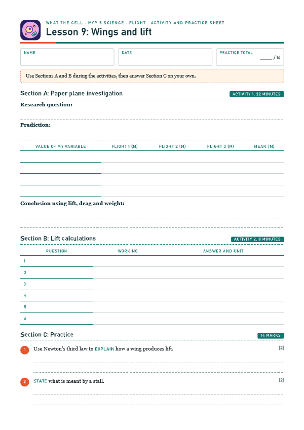

By the end of the lesson you can
- Explain lift with Newton's third law
- Describe how the angle of attack changes lift, and what a stall is
- Calculate lift from a pressure difference and a wing area
- Plan and carry out a fair test with paper planes
Keys: arrows or a presentation clicker move the slides, F for full screen. Slides with a red dot have a video or simulation.
Videos (all 5 minutes or less)
- 1:35
How do Wings Create Lift?
Science Max (Scholastic). While you watch: What does the shape of the wing do to the air? Slide 10.
Simulations
- Lab
Print and practise

Activity and practice sheet
Used in the lesson’s activities, with practice questions. Your teacher has the answers.
Download (PDF)Lesson 9 slides
All 20 slides in one file, to read again or print. The video buttons on the slides open YouTube.
Download the slides (PDF)Revising? The Revision tab on the unit page has the unit notes and review.
Class activity pack
Everything to print for the lesson’s activities: picture cards, sorting mats, station cards with their kit lists, and the teacher’s set-up notes. Print it before class.
Download the activity pack (PDF)Notes: Wings and lift
How to revise
Use the revision deck on the Revision tab, then the unit notes one section at a time, then the unit review sheet under test conditions.
Calculations
Write the formula, put in the numbers with units, then give the answer with its unit. Weight is in newtons; convert cm² to m².
Command terms
State: give the fact. Describe: say what happens. Explain: say what happens and why. Evaluate: weigh both sides and conclude.
The big idea
Understanding the forces and pressures on objects in fluids has driven the development of flight.
Key words
| Newton's third law | equal and opposite forces on two objects |
|---|---|
| downwash | air pushed down by a wing |
| angle of attack | angle between wing and oncoming air |
| stall | sudden loss of lift at too big an angle |
| flaps | give more lift at low speed |
| ailerons, elevator, rudder | roll, pitch and yaw |
| wing area | bigger area, more lift |